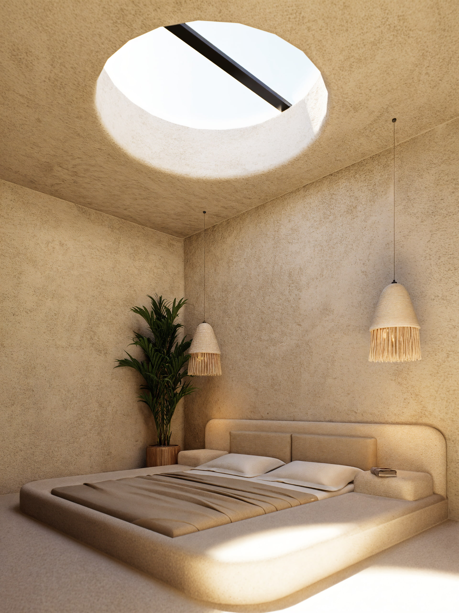
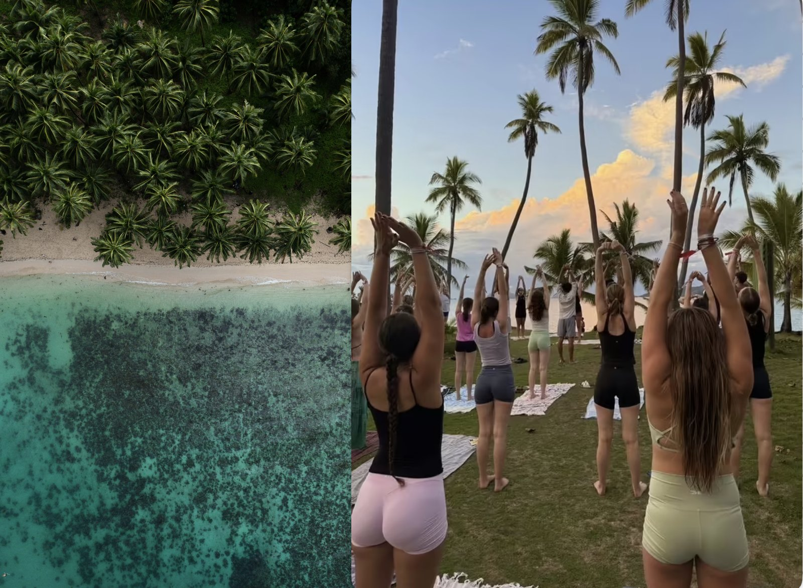

-
7:00 – 10:00 · Bajo reserva 25 €
Una bandeja flotante servida en la piscina privada, con fruta tropical fresca, café de especialidad de Lombok, zumo natural, bollería artesanal y una selección de desayunos dulces o salados.
- Fruta de temporada
- Café o té de Lombok
- Zumo natural
- Bollería artesanal
- Plato principal a elegir
-
7:00 – 10:00 18 €
Servido en la terraza privada, con café de Lombok, fruta tropical y pan recién horneado — y, para quien lo pida, nasi goreng o bubur ayam.
-
7:00 – 10:00 15 €
Bowl de fruta de temporada, yogur natural, granola casera y miel de la isla, para quien prefiere empezar el día ligero.
-
7:00 – 10:00 16 €
Nasi goreng, bubur ayam o pisang goreng, servidos con sambal y té de jengibre — el desayuno tal y como se toma en Lombok.

Casa Brava — Kuta Mandalika
Villas & Suites
Filosofía
Detenerse no es dejar de moverse. Es dejar de
necesitarlo.
Cada villa se construye desde el terreno, no sobre él: los muros heredan su curva y cada abertura se orienta hacia donde cae la luz de la mañana.
La privacidad no se puede explicar en un folleto. Se siente en un camino que solo cruza quien abre las puertas de Casa Brava.

La experiencia Casa Brava
Dentro de tu villa, cada detalle ya está pensado.

Servicios
Son extras pero formnan parte de quedarse en Casa Brava.